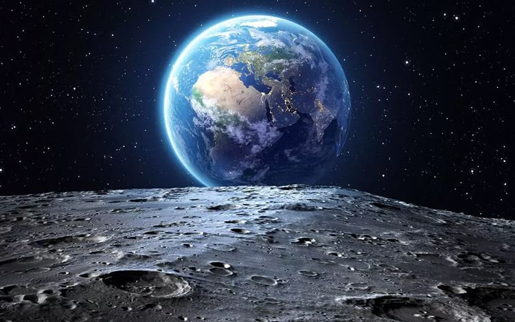
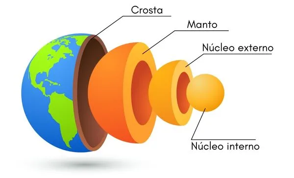
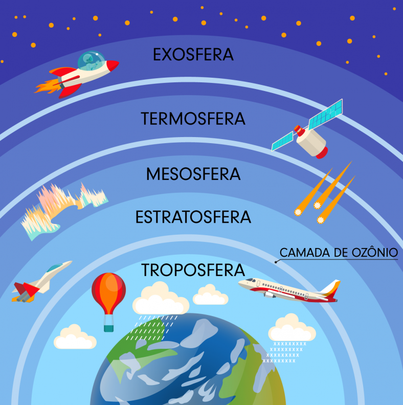
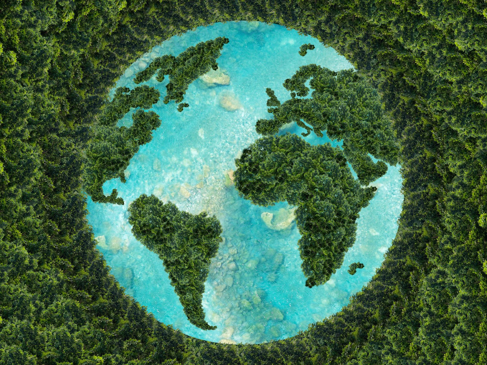

Terra
O Nosso Único Lar no Cosmos
Imagine um planeta especial, um ponto brilhante no vasto universo, onde a vida floresce. Este é o nosso planeta Terra, o terceiro a partir do Sol e o único conhecido por abrigar vida. Vamos explorar este mundo que chamamos de lar. À medida que exploramos o cosmos, lembramos sempre que a Terra é o nosso ponto de partida e, esperamos, um farol para o nosso futuro.
História e Observação
Ao longo da história, a Terra desempenhou um papel central na mitologia e na cultura das civilizações. Ela foi vista como a mãe natureza, um elo sagrado entre a humanidade e o cosmos. É o palco de nossa história, nossas conquistas e desafios. O nome "Terra" tem uma simplicidade encantadora, derivando do inglês antigo, onde significa "solo" ou "chão".
A Terra também é um ponto de partida para a exploração espacial. Satélites em órbita fornecem informações cruciais para monitorar o clima e o ambiente, lembrando-nos da responsabilidade de cuidar de nosso lar. A Terra é um tesouro que devemos preservar. É o único lugar conhecido onde a vida prospera, um planeta que moldou nossa história, cultura e identidade.
Camadas
Crosta: é a camada mais externa, a parte sólida e fina que conhecemos como solo e rochas. É onde estão localizados os continentes e os oceanos, com suas montanhas e vales impressionantes. Aqui onde está toda a vida de nosso planeta.
Manto Superior: aqui, as rochas são sólidas, mas elas podem se deformar lentamente ao longo do tempo, como uma substância viscosa. É nessa camada que ocorrem os movimentos das placas tectônicas, que são responsáveis por terremotos e a formação de montanhas majestosas.
Manto Inferior: as temperaturas aumentam à medida que nos aprofundamos, mas as rochas ainda são sólidas. É uma camada crucial que contribui para a dinâmica da Terra, alimentando as correntes de convecção que movem as placas tectônicas.
Núcleo Externo: nesta camada, o material é líquido, composto principalmente de ferro e níquel. A rotação da Terra combinada com as altas temperaturas no núcleo externo cria o nosso campo magnético, que nos protege das radiações nocivas do espaço.
Núcleo Interno: surpreendentemente, apesar das altas temperaturas, a pressão intensa mantém o ferro e o níquel no estado sólido. É a parte mais profunda e inacessível do nosso planeta, mas desempenha um papel fundamental na geração do campo magnético terrestre, que é essencial para a vida na Terra.
Troposfera: camada mais próxima da superfície, onde vivemos e onde ocorre a maior parte do tempo e do clima que experimentamos. É nessa camada que encontramos nuvens, chuvas e os aviões voam.
Estratosfera: nesta camada que encontramos a famosa camada de ozônio, que nos protege dos raios ultravioleta prejudiciais do sol. A Estratosfera também é onde os aviões a jato operam, pois é mais estável e livre de turbulências.
Mesosfera: é a camada onde os meteoros queimam ao entrar na atmosfera da Terra, criando estrelas cadentes. A mesosfera se estende a altitudes de cerca de 50 a 80 quilômetros acima da superfície da Terra.
Termosfera: é uma camada muito fina, mas onde ocorre a maior parte da absorção de radiação solar. A termosfera está localizada a altitudes de aproximadamente 80 a 700 quilômetros. É onde a Estação Espacial Internacional (EEI) orbita.
Exosfera: é uma camada que gradualmente se funde com o espaço exterior. A densidade do ar aqui é tão baixa que as partículas podem viajar grandes distâncias antes de colidir com outras.
Composição Química
A Terra é composta principalmente por rochas e minerais, com um núcleo interno de ferro e níquel. Sua superfície é enriquecida com silicatos, como quartzo e feldspato. Mas o elemento mais essencial é a água, que cobre 71% da Terra, possibilitando a vida como a conhecemos.
Os principais protagonistas da atmosfera são o nitrogênio, que compõe a maior parte, seguido do oxigênio, que é essencial para nossa respiração. Juntos, eles representam a grande maioria da atmosfera que respiramos.
Além desses gigantes, temos outros personagens, como o argônio, um gás inerte que preenche cerca de 1% da atmosfera, e os gases nobres como neônio, hélio, criptônio e xenônio, que, embora presentes em pequenas quantidades, têm suas próprias utilidades, desde iluminação de lâmpadas até resfriamento de equipamentos.

Curiosidades
A Terra não é uma esfera perfeita: devido à sua rotação, a Terra é ligeiramente achatada nos polos e alargada no equador, resultando em uma forma ligeiramente elipsoidal, como uma bola de futebol americano.
Um dia não tem exatamente 24 horas: evido à desaceleração gradual da rotação da Terra, um dia está ficando ligeiramente mais longo ao longo do tempo. Portanto, os cientistas adicionam "segundos bissextos" ocasionalmente para manter nossos relógios alinhados com a rotação da Terra.
O recorde de temperatura mais alta e mais baixa: O lugar mais quente já registrado na Terra é o Deserto de Lut, no Irã, onde a temperatura atingiu 70,7 °C. O lugar mais frio já registrado é a Estação Soviética de Pesquisa Vostok, na Antártica, onde a temperatura caiu para -89,2 °C.
O ponto mais alto e o mais profundo: O Monte Everest, no Himalaia, com 8848 metros, é a montanha mais alta do mundo, enquanto a Fossa das Marianas, no Oceano Pacífico, é a fossa mais profunda, atingindo profundidades de mais de 10.900 metros.
